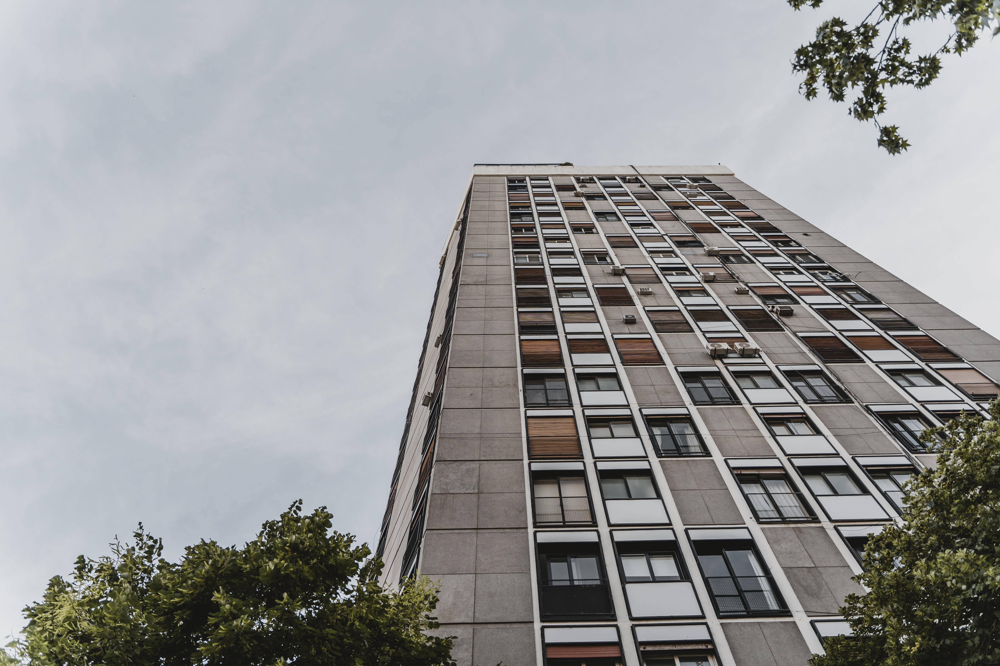

A Casa Vista Consciente situa-se em terreno levemente inclinado,
oferecendo vistas amplas para mata nativa. A planta é aberta, com
divisor de vidro do piso ao teto conectando sala e paisagem. O
projeto utiliza balanços metálicos na fachada principal, criando
proteção solar — sem adornos desnecessários. Os pisos em concreto
polido se estendem da área social ao terraço, reduzindo transições
visuais e reforçando a conexão interior‑exterior. O telhado é verde,
com captação de água de chuva para reuso nos jardins. O desafio era
integrar eficiência energética sem elevar custos; a solução foi
combinar forro térmico, janelas de alto desempenho e tiras de LED
integrado. Resultado: estética limpa, impacto ambiental reduzido,
custo controlado.

O Lumina Offices é um prédio de escritórios de seis andares,
localizado numa zona urbana revitalizada. A proposta foi manter a
estrutura de concreto aparente — vigas e pilares expostos como
elemento estético — e incorporar grandes janelas horizontais que
promovem iluminação natural intensa, reduzindo gastos com iluminação
artificial. O térreo abriga uma “praça corporate” com café e
recepção integrada; a circulação vertical foi tratada como peça de
design, com os shafts aparentes e o elevador envidraçado. Para
conforto acústico, o projeto inseriu painéis de lã mineral no teto e
paredes internas de drywall revestido. O principal desafio foi
adequar a acústica, pois o bruto aparente tende a reverberar; a
solução equilibrou ruído e estética — mantendo o caráter industrial,
sem comprometer a produtividade.
>